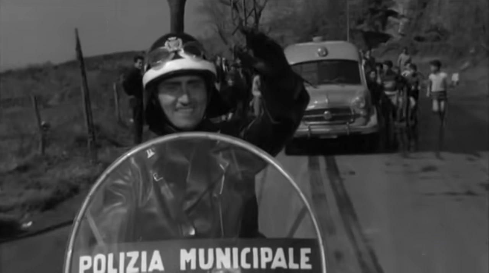

IL VIGILE CHE NON SI INGINOCCHIÒ
Roma, estate del 1959. Un vigile urbano, Ignazio Melone, ferma l'auto del questore della capitale, Carmelo Marzano. Una contravvenzione che, in un Paese davvero abituato all'uguaglianza davanti alla legge, dovrebbe finire in pochi minuti. Invece diventa un caso nazionale.
Melone è un uomo con una funzione pubblica modesta e un potere limitato. Marzano è il questore di Roma. Non è soltanto un automobilista: è un uomo che incarna lo Stato, dirige uomini armati, dispone di informazioni, relazioni e autorità. Il punto della storia non è la multa. È il momento in cui un uomo piccolo tratta un uomo grande come un cittadino qualsiasi.
Le ricostruzioni storiche ricordano che il contrasto nasce da un sorpasso sulla Cristoforo Colombo. Secondo il vigile, il questore reagisce ostentando il proprio rango e contestando persino la validità della contravvenzione. Il caso si allarga, partono accertamenti sul vigile, emergono informazioni sulla sua famiglia, il confronto assume i contorni di una vendetta istituzionale. Treccani ricorda il caso come la matrice reale de Il vigile di Luigi Zampa.
La stampa dell'epoca mostra bene la temperatura della vicenda. L'Unità parlò di una 'montatura' contro il vigile che aveva osato multare il questore; altre testate raccontarono il trasferimento di Melone, le indagini e il tentativo di screditarlo attraverso i precedenti di alcuni familiari.
Melone non fece qualcosa di straordinario. Fece qualcosa di normale in un Paese in cui, davanti al potente, la normalità poteva diventare un atto di coraggio.
Il caso Melone è importante perché ci ricorda una cosa che oggi rischiamo di dimenticare: prima ancora che il potente impari ad abusare del proprio rango, la società può aver già imparato a inginocchiarsi. Nel 1959 il titolo, la divisa importante, il notabile, il questore, il sindaco, il commendatore non indicavano soltanto una funzione. Indicavano una distanza sociale.
Il cittadino comune non aveva bisogno che qualcuno gli ordinasse di essere deferente. Spesso lo era già. L'ignoranza, la dipendenza economica, il timore delle istituzioni e una cultura fortemente gerarchica avevano costruito una forma di obbedienza preventiva. Melone rompe quella consuetudine: non interpreta il nome che ha davanti. Interpreta la norma.
DAL FATTO VERO A OTELLO CELLETTI
Luigi Zampa trasforma quella storia in cinema nel 1960. Il soggetto è di Rodolfo Sonego, che insieme a Zampa e Ugo Guerra firma la sceneggiatura. Alberto Sordi diventa Otello Celletti; Vittorio De Sica interpreta il sindaco. Roma Capitale, presentando una rassegna dedicata a Sordi, descrive Celletti come un vigile 'fiero e rigoroso' che scopre presto che la legge non può essere uguale per tutti.
Otello è vanitoso, goffo, desideroso di sentirsi importante. La divisa gli piace: gli dà un posto nel mondo. La sua onestà non coincide con l'impeccabilità del funzionario. La cerchiamo nel rapporto che stabilisce con chi ha davanti, soprattutto quando potrebbe approfittare della propria autorità.
È questa la nostra chiave di lettura del film. Otello sente che il ruolo gli conferisce dignità, ma anche che quella dignità appartiene a qualcosa di più grande di lui. Non occorre farne un santo per riconoscere la differenza tra il piacere di indossare una divisa e la volontà di usarla per schiacciare qualcuno.
Davanti a Sylva Koscina, con il figlio appresso, leggiamo un omaggio alla bellezza. Per Otello quell'incontro ha qualcosa di familiare e straordinario insieme: è come avere davanti l'Italia del cinema, un'immagine del Paese di cui sentirsi orgoglioso. Le riserva un trattamento di favore, ed è proprio per questo che viene richiamato. Ma ciò che ci interessa è la direzione del suo gesto: si mette al servizio di ciò che ammira, senza avanzare una pretesa sulla persona. Questa è la nostra interpretazione della sua riverenza, non una giustificazione giuridica dell'eccezione.
La pernacchia rende ancora più riconoscibile questo confine. Otello vuole rispetto per la persona e per la divisa. Nella scena non converte l'affronto in una ricerca di irregolarità con cui colpire il bar. È ciò che possiamo chiamare un'autorità passiva: il ruolo sostiene la richiesta di dignità, ma non diventa lo strumento per far pagare l'offesa.
Con il sindaco il rapporto cambia. Dopo essere stato richiamato all'imparzialità, Otello applica la regola anche a chi lo ha ammonito. Il superiore pretende allora di sottrarsi a ciò che esige dagli altri. Non contesta il pericolo della strada: contesta che quel vigile possa trattare lui come un automobilista qualsiasi.
Il sistema reagisce contro Otello e la sua famiglia. Per essere reintegrato, il vigile finisce per ritrattare. Quando il sindaco passa di nuovo a velocità eccessiva, lo lascia andare; poco dopo l'auto finisce fuori strada.
Noi leggiamo il finale a partire da ciò che rimane al suo posto: il cartello, la strada, la curva. Otello non ha creato il pericolo e non ha cancellato l'avvertimento. Rimane testimone delle conseguenze di una scelta che il sindaco ha rivendicato per sé. La commedia porta fino in fondo la pretesa dell'eccezione: il rango può ottenere che il vigile taccia, ma la curva non riconosce il rango.
Il sindaco e il vigile potrebbero svolgere funzioni diverse senza ostacolarsi. L'autorità dell'uno non richiede l'umiliazione dell'altro. Quando il sindaco impedisce a Otello di lavorare, interrompe una collaborazione che protegge anche lui. È da questa rottura che parte il nostro percorso.
1950: UNA DONNA, TRE DEPUTATI E UNA SPALLA NUDA
Nove anni prima del caso Melone, un altro episodio aveva già mostrato quanto facilmente il rango potesse trasformarsi in diritto di giudicare. È il 20 luglio 1950. Nel ristorante Da Chiarina, in via della Vite a Roma, siede Edith Mingoni in Toussan. Fa caldo. Il suo abito lascia scoperte le spalle.
Nello stesso locale ci sono tre parlamentari democristiani: Oscar Luigi Scalfaro, Umberto Sampietro e Vittoria Titomanlio. Scalfaro attraversa la sala e richiama la donna con veemenza. La Rai, ricostruendo molti anni dopo il famoso 'caso del prendisole', sintetizza la scena con l'intimazione: 'Si rimetta il bolerino'.
Su alcune frasi e su un eventuale schiaffo le fonti divergono. Alcune cronache lo riportano, altre ricostruzioni spiegano che l'episodio fu ingigantito negli anni e che il ceffone potrebbe appartenere alla leggenda successiva. Non serve scegliere la versione più sensazionale: il nucleo documentato è già abbastanza forte.
RaiNews ricorda che durante l'alterco Edith fu definita 'disonesta' da Scalfaro, 'bestia' da Sampietro e 'fascista' da Titomanlio, quest'ultima dopo che la donna aveva dichiarato la propria appartenenza o simpatia per il Movimento Sociale Italiano. La scena è pubblica, collettiva, sbilanciata.
Edith non è una ragazza che cerca lo scandalo. Proviene da un ambiente militare e tradizionale: il padre è un colonnello dell'Aeronautica in congedo e pluridecorato, il marito è anch'egli ufficiale. La stessa Edith è politicamente collocata a destra, dentro un universo tutt'altro che libertario o anticonformista.
Il potere non ha bisogno che l'altro sia davvero 'sbagliato'. Gli basta sentirsi autorizzato a definirlo tale.
Edith reagisce. Querela. Il caso arriva in Parlamento. Il padre sfida Scalfaro a duello; poi gli subentra il marito. Scalfaro rifiuta richiamandosi alla propria fede cristiana. E a quel punto entra nella storia Antonio De Curtis, Totò.
Totò non ha una carica istituzionale. Ha però un capitale simbolico enorme: è un eroe popolare del grande schermo, una figura amata da milioni di italiani. Usa quella notorietà in direzione opposta a quella vista al ristorante. Non per ottenere un'eccezione. Per contestare l'eccezione morale che il potente si è attribuito.
In una lettera aperta pubblicata dall'Avanti!, Totò rimprovera a Scalfaro di aver invocato i principi cristiani per evitare il duello dopo aver mancato, a suo giudizio, di rispetto a una 'signora rispettabilissima'. L'intervento è importante non per il folklore del duello, ma perché mette di fronte due modi opposti di usare il prestigio.
Scalfaro ha il ruolo e lo usa per giudicare. Totò ha la fama e la usa per difendere.
Il caso acquista un peso ulteriore sapendo chi diventerà Scalfaro: Presidente della Repubblica. Questo non autorizza a ridurre una lunga biografia istituzionale a un episodio del 1950. Ma rende quell'episodio ancora più istruttivo: anche chi arriverà al vertice dello Stato può mostrare, in un momento della propria vita, quanto sottile sia il confine tra convinzione morale e prevaricazione.
Edith, anni dopo, avrebbe raccontato che la vicenda le aveva rovinato la vita. Anche questo è un elemento essenziale: l'umiliazione pubblica dura pochi minuti per chi la esercita; può durare anni per chi ne diventa il bersaglio.
IL MICROFONO: QUANDO LA PUNIZIONE DIVENTA SPETTACOLO
Al ristorante il prestigio istituzionale espone una donna al giudizio dei presenti. Quarant'anni dopo, la televisione moltiplica quella platea: chi conduce può trasformare un errore in un'immagine destinata a inseguire una persona per decenni.
Il 3 maggio 1990 Maura Livoli partecipa a TeleMike. Durante le domande finali viene scoperta mentre consulta un bigliettino. È nel torto, e lei stessa lo riconoscerà molti anni dopo. Mike Bongiorno ha quindi pieno titolo per fermare il gioco e squalificarla.
Ma il potere mediatico comincia dove finisce la regola. La squalifica diventa una lunga reprimenda pubblica. Livoli viene ripresa, interrogata, giudicata. Quando si sente male, persino quel momento viene guardato con sospetto. Il fatto non resta confinato alla competizione: diventa uno degli episodi più celebri della televisione italiana.
Nel 2025 Livoli ha raccontato al Corriere della Sera di aver sofferto a lungo per quella scena e di aver percepito la reazione di Bongiorno come un'umiliazione. Ha anche ribadito la propria colpa: i foglietti c'erano. Proprio per questo la storia è utile. Non abbiamo bisogno di una vittima perfetta per misurare una sproporzione.
Essere nel torto autorizza a diventare spettacolo?
Un concorrente può violare una regola. Il conduttore può decidere quanto a lungo il Paese guarderà quella violazione. Il potere non è soltanto il microfono: è il controllo del contesto, del tempo, dell'immagine e della memoria.
IL MINISTRO E I PRECARI
Il microfono non appartiene soltanto allo spettacolo. Nel 2011 Renato Brunetta, ministro della Pubblica amministrazione, incontra la contestazione di alcuni precari e pronuncia la frase «Siete l'Italia peggiore». Sosterrà poi che il giudizio era rivolto ai contestatori e non ai precari come categoria.
Ancora una volta, il punto non è fare la conta delle parolacce. È vedere chi può permettersi di chiudere la scena. I precari sono lì perché il loro futuro dipende anche dalle politiche della persona che hanno davanti. Il ministro può interrompere, andarsene, salire in auto e continuare a esercitare il proprio ruolo.
La frase dura pochi secondi. L'asimmetria dura molto di più.
IL CAPO CHE PUÒ LICENZIARTI
Il ministro può chiudere un confronto pubblico e allontanarsi. Nel rapporto di lavoro la scena continua anche il giorno dopo, perché chi ha subito deve tornare davanti alla stessa persona. Il contratto dà alla gerarchia un peso concreto: salario, posizione e possibilità di carriera dipendono dal giudizio di chi sta sopra.
Con Steve Jobs la questione si complica perché il successo è fuori discussione. Ha trasformato Apple e contribuito a cambiare musica, telefonia, informatica e design. Proprio quei risultati hanno alimentato il racconto del capo al quale si perdona tutto in nome di ciò che riesce a costruire.
Fortune, in un profilo del 2008 costruito su numerose testimonianze, descrive un uomo capace di ridurre subordinati alle lacrime, licenziare durante scoppi d'ira e imporre una cultura in cui contrariarlo poteva essere difficile. Lo stesso articolo osserva però che molti collaboratori di lungo corso consideravano quella pressione parte di un ambiente capace di produrre risultati eccezionali.
Ed è proprio qui che nasce la trappola morale. Se il prodotto è straordinario, allora il metodo viene assolto. Se l'azienda vince, la sofferenza diventa 'esigenza'. Se il capo ha visione, l'umiliazione viene reinterpretata come prezzo dell'eccellenza.
Il successo può diventare una licenza morale: se avevi ragione sul prodotto, qualcuno finirà per convincersi che avevi ragione anche sul modo di trattare le persone.
Ma pretendere molto e umiliare non sono la stessa cosa. Licenziare può essere una decisione manageriale. Minacciare, insultare o schiacciare chi dipende dal tuo giudizio aggiunge un elemento che non serve alla funzione: la dimostrazione di onnipotenza.
Qui il gesto del potente è semplice: 'posso decidere se resti'. È una frase che può non essere mai pronunciata perché è già contenuta nella gerarchia.
QUANDO L'ISTITUZIONE ENTRA NELL'UFFICIO
La politica offre casi analoghi. Nel 2020 l'indagine sul comportamento della ministra britannica Priti Patel concluse che, in alcune occasioni, il suo comportamento verso funzionari pubblici poteva essere descritto come bullying per l'impatto prodotto. La relazione rilevava anche problemi organizzativi e il fatto che Patel non fosse sempre consapevole dell'effetto del proprio stile.
Nel 2023 il rapporto indipendente sulle otto denunce formali contro Dominic Raab individuò condotte compatibili con i criteri esaminati per il bullying. Raab si dimise da vicepremier e ministro della Giustizia.
Le indagini su Patel e Raab portano il problema dentro il funzionamento dello Stato. Un funzionario deve poter svolgere il proprio lavoro anche quando il suo parere contraddice il ministro. Se l'obbedienza alla persona prende il posto del servizio all'istituzione, quella competenza diventa inutilizzabile proprio quando sarebbe più necessaria.
QUANDO IL POTERE ARRIVA AL CORPO
Quando il controllo delle opportunità professionali invade la sfera sessuale, il costo del rifiuto può diventare ancora più alto. Carriera e dipendenza economica entrano in una relazione che riguarda il corpo. Le responsabilità vanno accertate caso per caso, ma la posizione da cui le persone si incontrano è già parte della storia.
Harvey Weinstein non era semplicemente un uomo famoso. Era uno dei produttori più potenti di Hollywood. Miramax aveva vinto Oscar, lanciato carriere, aperto porte, costruito relazioni con agenti, registi, festival e stampa. In un ambiente simile, un incontro con lui poteva avere conseguenze professionali enormi.
Nel 2025, nel nuovo processo di New York seguito all'annullamento della condanna del 2020 per errori processuali, Weinstein è stato nuovamente dichiarato colpevole per un reato sessuale ai danni dell'ex assistente di produzione Miriam Haley. È stato assolto su un altro capo, mentre su una terza accusa la giuria non raggiunse un verdetto unanime. Resta inoltre detenuto per una distinta condanna californiana a 16 anni.
Il valore sociale del caso non sta soltanto nella cronaca giudiziaria. Sta nel meccanismo descritto da numerose testimonianze: una persona che controlla opportunità professionali incontra donne che spesso cercano proprio quelle opportunità. Il rapporto non comincia da zero. Comincia già inclinato.
Nel potere sessuale il messaggio può diventare: 'Il tuo rifiuto non riguarda soltanto me. Può riguardare il tuo futuro'.
È qui che la questione di genere emerge più nettamente. L'Organizzazione internazionale del lavoro stima che il 6,3% delle persone occupate abbia sperimentato violenza o molestia sessuale sul lavoro nel corso della propria vita lavorativa. Tra le donne la quota sale all'8,2%, contro il 5,0% degli uomini: il divario più ampio fra le forme di violenza e molestia misurate dall'ILO.
Questo dato non autorizza a dire che la prevaricazione sia 'maschile'. Uomini e donne possono maltrattare subordinati. Dice però che quando il potere assume una forma sessuale, il sesso dei protagonisti e le gerarchie professionali diventano molto più rilevanti.
Una review scientifica del 2024 sulle molestie sessuali sul lavoro sottolinea il ruolo delle strutture gerarchiche, delle culture organizzative permissive e delle condizioni che rendono costoso per la vittima parlare o rifiutare.
CHI È PAGATO PER SERVIRTI NON È DI TUA PROPRIETÀ
La dipendenza non riguarda soltanto chi aspetta una parte o una promozione. È presente nelle case, nei ristoranti e dietro le quinte, dove camerieri, domestici, autisti e assistenti devono gestire anche gli umori di chi li paga. Qui il rapporto con il potere passa per gesti quotidiani che raramente arrivano al pubblico.
Nel 2007 Naomi Campbell si dichiarò colpevole a New York di un reato minore dopo aver lanciato un telefono e colpito la domestica Ana Scolavino, che ebbe bisogno di punti di sutura. La modella fu condannata a cinque giorni di lavori socialmente utili, al pagamento delle spese mediche e a un percorso di gestione della rabbia.
Non serve trasformare Campbell in un simbolo universale. Il singolo fatto basta a rendere visibile la sproporzione: una delle due persone possiede la casa, la fama, il denaro e il posto di lavoro dell'altra. L'altra è lì perché lavora.
James Corden offre una versione molto meno grave ma altrettanto istruttiva. Nel 2022, dopo le accuse del proprietario del Balthazar di New York sul trattamento riservato al personale, Corden riconobbe in televisione di aver fatto un commento rude e poco cortese a un cameriere e si scusò.
Il modo più semplice per capire come una persona amministra il potere è guardare come tratta chi non può risponderle nello stesso modo.
Il cameriere può essere arrabbiato, ma deve continuare a servire. L'assistente può sentirsi umiliato, ma dipende dalla raccomandazione del capo. La domestica può reagire, ma il conflitto avviene nella casa e nel rapporto economico dell'altra persona.
È qui che la frase 'è fatto così' diventa pericolosa. Perché trasforma la capacità degli altri di sopportare in una licenza a continuare.
QUANDO L'INFORMAZIONE DIVENTA UNA LEVA
Con Fabrizio Corona la leva cambia ancora. Chi subisce non deve necessariamente essere un dipendente o una persona meno famosa. Può essere un calciatore affermato. Basta che qualcuno possieda un'informazione e pretenda denaro in cambio del silenzio: la forza del rapporto nasce da ciò che l'altro teme di perdere.
Nel gennaio 2013 la Cassazione confermò la condanna a cinque anni per estorsione aggravata e trattamento illecito di dati personali nel caso David Trezeguet. Secondo la decisione, Corona aveva preteso 25 mila euro dal calciatore per non pubblicare fotografie che lo ritraevano.
La fotografia, da sola, è carta o file. Diventa potere perché dall'altra parte esiste una reputazione, una relazione, una famiglia, una carriera. Il valore della leva cresce insieme al valore di ciò che l'altro teme di perdere.
Il potente non deve sempre ordinare. A volte gli basta mettere sul tavolo il prezzo del rifiuto.
Corona ha avuto vicende giudiziarie diverse, con esiti diversi. Il dossier non ha bisogno di confonderle. Il caso Trezeguet basta perché qui non siamo nel territorio dell'opinione: c'è una condanna definitiva.
LA CORTE DEL POTENTE
Il potente raramente diventa onnipotente da solo. Intorno a lui cresce un ecosistema.
Assistenti che anticipano gli scoppi d'ira. Collaboratori che imparano a non contraddire. Dirigenti che preferiscono non vedere. Amici che trasformano ogni critica in un attacco. Dipendenti che hanno bisogno dello stipendio. Partner professionali che hanno interesse a proteggere il marchio.
Più una persona diventa importante, più aumenta il numero di persone che possono perdere qualcosa dal suo ridimensionamento. E così il comportamento che all'inizio sembrava intollerabile viene normalizzato.
La sfuriata diventa 'perfezionismo'. L'umiliazione diventa 'metodo'. La minaccia diventa 'leadership'. La molestia diventa 'equivoco'. Il licenziamento punitivo diventa 'decisione difficile'. Il potente smette perfino di ricevere un'immagine realistica di sé.
Prima che il potente creda di essere onnipotente, qualcuno intorno a lui ha spesso iniziato a comportarsi come se lo fosse davvero.
PERCHÉ IL POTERE PUÒ DISINIBIRE
L'isolamento dal dissenso non dipende soltanto dal carattere. Chi dispone di maggiore libertà d'azione incontra anche meno ostacoli capaci di costringerlo a considerare il punto di vista degli altri. La psicologia sociale ha provato a studiare questo rapporto, con risultati che aiutano a formulare domande senza spiegare da soli le singole biografie.
Nel 2006 Adam Galinsky e colleghi pubblicarono una serie di esperimenti sul rapporto tra potere e capacità di assumere il punto di vista altrui. I soggetti collocati in condizioni di maggiore potere tendevano meno spontaneamente a considerare la prospettiva degli altri e risultavano meno accurati nel riconoscerne alcune emozioni.
Altri filoni di ricerca descrivono il potere come una condizione capace di aumentare libertà d'azione e disinibizione. Non è una condanna biologica. Non significa che chi ottiene autorità diventi inevitabilmente peggiore. Significa che alcuni freni esterni possono indebolirsi.
Il punto decisivo, allora, non è eliminare il potere. Sarebbe impossibile e perfino indesiderabile. È costruire un rapporto sano con esso: istituzioni, regole, contraddittorio, responsabilità, cultura del limite.
L'autorità ha bisogno di risposte, anche scomode, per restare aderente alla realtà. Un collaboratore che segnala un errore, un funzionario che esprime un dissenso e un vigile che ferma un'auto stanno svolgendo funzioni utili. Trattarli come avversari significa rinunciare a una parte delle informazioni e delle protezioni di cui il potere stesso ha bisogno.
Chi si oppone a una prevaricazione non sta per forza negando l'autorità di chi ha davanti. Può chiedere proprio che torni a esercitarla per ciò a cui serve.
IL SESSO DEL POTERE
Mettendo insieme i casi emerge una somiglianza, ma anche una differenza.
Urla, umiliazioni e maltrattamento del personale compaiono, nei casi esaminati, in comportamenti di uomini e donne. Questo basta a escludere che uno dei due generi ne sia immune; non basta a stabilire quanto pesino il ruolo o il sesso nella frequenza degli abusi.
Quando però si entra nel terreno della coercizione sessuale, la struttura cambia. I dati ILO mostrano una maggiore esposizione femminile, e la ricerca collega frequentemente le molestie sessuali a gerarchie professionali, dipendenza economica e norme di genere.
Questo non trasforma ogni abuso sessuale in una storia identica, né cancella le vittime maschili. Mostra però che il corpo può diventare un ulteriore territorio su cui il potere prova a esercitarsi.
La possibilità di subire un abuso non è distribuita nello stesso modo fra tutte le persone. Considerare le differenze serve a capire dove la dipendenza professionale incontra ulteriori ostacoli al rifiuto e alla denuncia.
PERCHÉ CHI SUBISCE RESTA ZITTO
Una delle domande peggiori che si possa rivolgere a una vittima è anche una delle più comuni: 'Perché non hai parlato prima?'
La domanda lascia fuori il costo della reazione. Chi subisce deve valutare ciò che potrebbe accadere dopo aver parlato, spesso senza sapere chi sarà disposto a sostenerlo.
Se denuncio il capo, lavorerò ancora? Se contesto il produttore, qualcuno mi chiamerà? Se rispondo alla star, perderò il posto? Se la persona che mi molesta controlla il progetto, a chi posso parlare? Se l'organizzazione vive del suo nome, chi ha interesse a credermi?
La prima indagine globale ILO-Lloyd's Register Foundation-Gallup sulla violenza e le molestie nel lavoro ha rilevato che più di una persona su cinque aveva sperimentato almeno una forma di violenza o molestia nella propria vita lavorativa. Solo circa metà delle persone che avevano vissuto queste esperienze ne aveva parlato con qualcuno. Tra le ragioni più citate per il silenzio comparivano la convinzione che fosse una perdita di tempo e la paura per la propria reputazione.
Il silenzio, quindi, non è necessariamente prova che nulla sia accaduto. Può essere la conseguenza più prevedibile di un rapporto nel quale reagire costa più che subire.
DENUNCIARE ROMPE LA SCENA
La denuncia non è una formula magica e non è sempre semplice. Servono prove, tutela, canali adeguati, assistenza. Ma quando esiste un abuso serio o un illecito, portare il fatto fuori dalla relazione privata modifica la struttura stessa del potere.
Fino a quel momento il potente controlla spesso la scena: il luogo di lavoro, il programma, il contratto, l'informazione, la reputazione. La denuncia introduce un terzo soggetto: un magistrato, un organismo interno, un ispettore, un avvocato, una testata, un sindacato, un'autorità.
La denuncia non rende automaticamente forte chi era debole. Ma toglie al potente il monopolio della scena.
Edith Mingoni denuncia. Le parole dette in un ristorante diventano un caso parlamentare. Ignazio Melone non si genuflette e il comportamento del questore diventa un caso nazionale. Le lavoratrici che parlano di Weinstein trasformano esperienze isolate in un sistema visibile. Il meccanismo morale è lo stesso: ciò che prima era privato entra nel territorio della regola.
LE FORME CAMBIANO. LA FRASE RESTA LA STESSA.
Mettere questi casi nello stesso dossier non significa metterli sullo stesso piano.
Una reprimenda pubblica non è un'estorsione. Un insulto non è una violenza sessuale. Un comportamento aggressivo verso un collaboratore non è una condanna penale. Confondere gravità e responsabilità sarebbe falso.
Ma i gesti diversi possono nascere da una struttura simile: la convinzione che l'altro disponga di meno strumenti per opporsi.
Il rango: «La regola per me è diversa».
Il microfono: «Posso decidere come sarai ricordato».
Il lavoro: «Posso decidere se resti».
La carriera: «Il tuo rifiuto può costarti il futuro».
L'informazione: «Posso danneggiarti se non cedi».
Il servizio: «Sei qui per servirmi, quindi assorbirai anche la mia aggressività».
La corte: «Nessuno intorno a me mi dice più di no».
La frase invisibile, sotto molte di queste forme, è sorprendentemente semplice: «Posso farlo».
IL POTERE È UNA PROVA MORALE
Non si capisce davvero come una persona amministra il potere osservando come tratta chi può danneggiarla. Con i propri pari quasi tutti imparano la prudenza.
La prova arriva davanti a chi non può restituire lo stesso colpo: il cameriere che deve sorridere, l'assistente che può essere licenziato, l'attrice che aspetta una parte, il funzionario che non può rispondere al ministro come risponderebbe a un vicino, la collaboratrice che dipende dalla firma del capo, la persona che teme che una fotografia distrugga la propria reputazione.
Otello ci accompagna perché rende riconoscibile un'alternativa. Nella scena della pernacchia chiede rispetto senza convertirlo in ritorsione; davanti al sindaco cerca di esercitare la funzione che gli è stata affidata. La sua umanità, comprese vanità e debolezze, rende più concreta questa distinzione.
Le responsabilità di Scalfaro, Jobs, Weinstein, Campbell e Corona rimangono diverse, così come lo sono le prove e gli esiti dei singoli casi. Il confronto riguarda il momento in cui una posizione di forza viene impiegata per restringere la libertà dell'altro: rispondere, lavorare, rifiutare, conservare la propria dignità.
Il limite è anche questo: accettare che l'altro continui a essere una persona, con un lavoro da svolgere e ragioni da esprimere, persino quando dipende da noi.

IL POTERE LOGORA CHI LO HA
Il potere può logorare il senso del limite.
Può far sembrare normale ciò che, senza una posizione dominante, sarebbe immediatamente corretto dagli altri. Può convincere che il silenzio sia consenso, che la paura sia rispetto, che l'umiliazione sia disciplina, che il privilegio sia merito, che la disponibilità dell'altro sia dovuta.
La possibilità di un rapporto diverso attraversa tutto il dossier. Melone prova ad applicare una regola al questore. Il nostro Otello chiede che la divisa gli consenta di fare il vigile. Chi protesta contro un'umiliazione domanda di poter continuare a lavorare senza esserne il bersaglio.
Torniamo allora a quella curva. Il sindaco aveva respinto l'intervento di Otello come se fosse un ostacolo personale. L'incidente rende visibile la protezione contenuta in quel limite. Possiamo immaginare che, tornando sulla stessa strada con un'altra auto, avrebbe rallentato. Il film non mostra quel dopo; è la domanda che ci lascia.
Le cose funzionano meglio quando chi ha potere lascia agli altri lo spazio per esercitare il proprio ruolo. Il sindaco ha bisogno del vigile, il dirigente dei collaboratori, l'istituzione di chi può segnalarne gli errori. Il potere comincia a logorare chi lo esercita quando gli fa scambiare questa cooperazione per una diminuzione di sé.
IL POTERE LOGORA CHI LO HA.
Fonti documentali
- Luigi Zampa — Treccani, Dizionario Biografico degli Italiani, consultato settembre 2026
- Sono cadute le accuse più gravi mosse dalla polizia a Melone? — l'Unità, archivio storico, 25 novembre 1959
- Al via la rassegna cinematografica su Alberto Sordi — Roma Capitale, 2025
- Scalfaro, dal 'caso del prendisole' al 'Io non ci sto' — Rai Televideo, consultato settembre 2026
- Vittoria Titomanlio, madre costituente — RaiNews TGR Puglia, 2025
- Totò, Scalfaro e lo scandalo del prendisole — raccolta documentaria dedicata a Totò, consultato settembre 2026
- Maura Livoli: «Sbagliai... ma Mike Bongiorno mi umiliò in tv» — Corriere della Sera, 11 settembre 2025
- The trouble with Steve Jobs — Fortune, 5 marzo 2008
- Ministerial Code investigation — GOV.UK, 20 novembre 2020
- Investigation report to the Prime Minister — Dominic Raab — GOV.UK, 21 aprile 2023
- Harvey Weinstein convicted of sex crime amid contentious jury deliberations — Reuters, 11 giugno 2025
- Advancing ILO Convention No. 190 on Ending Violence and Harassment at the Workplace — International Labour Organization, 16 settembre 2024
- Sexual Harassment at Work: Scoping Review of Reviews — Psychology Research and Behavior Management / PMC, 2024
- Court sentences model Campbell to community service — The Guardian, 16 gennaio 2007
- James Corden admits he was 'ungracious' to Balthazar server — Los Angeles Times, 25 ottobre 2022
- Estorsione, Cassazione conferma condanna a Corona: 5 anni — Sky TG24, 18 gennaio 2013
- Power and perspectives not taken — Psychological Science / PubMed, dicembre 2006
- Experiences of violence and harassment at work: a global first survey — International Labour Organization, Lloyd's Register Foundation, Gallup, 2 dicembre 2022
- ANICA, Archivio del Cinema Italiano — Il vigile, scheda del film, 1960.